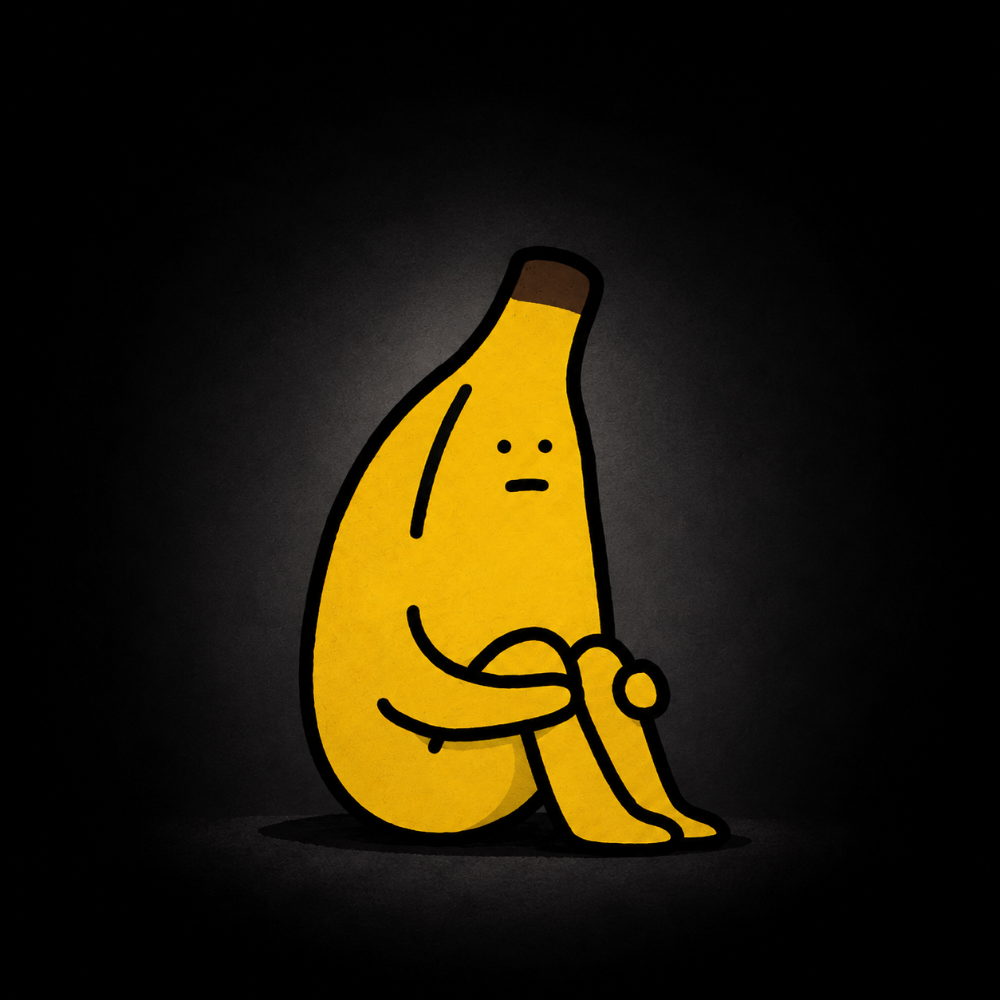

About Lonely Banana
Hi, I'm Lonely Banana. I'm just an ordinary person behind this little project. Sometimes, I feel lonely, and I don't always have someone to share my thoughts or ideas with. So I decided to create videos, tell little stories, and make random things that bring a bit of happiness into my day. Lonely Banana represents a little part of that feeling. A small banana sitting alone, hoping someone will come along and make his day a little brighter. Maybe some of you feel the same way sometimes. I created this character as a way to express those feelings, share my creativity, and distract myself from loneliness. I don't know how far this little project will go, but I'm happy to share it with anyone who comes across it. If you're feeling lonely too, I hope this little corner of the internet makes you feel a little less alone. Thank you for being here.
About Website
This website is a little project I made to share something personal with everyone. Sometimes, life gets quiet, and there are moments when I feel lonely and have no one to talk to. I wanted to create something simple where people could share a little kindness, even through a single tap. Every tap adds to the total, reminding me that even the smallest actions can make someone feel less alone. Thank you for taking a moment to visit and be part of this little project.